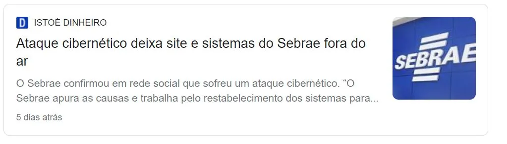
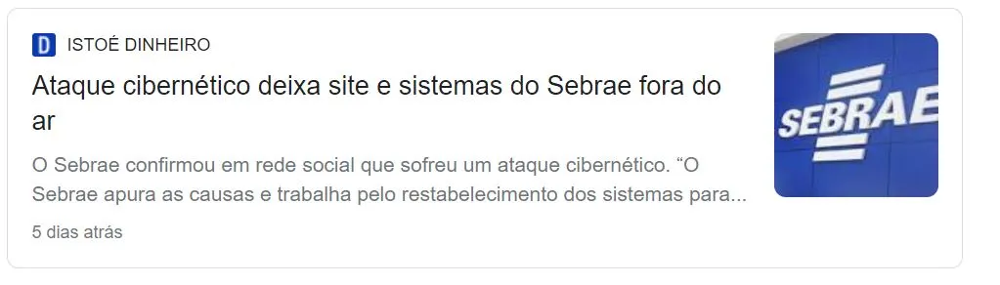
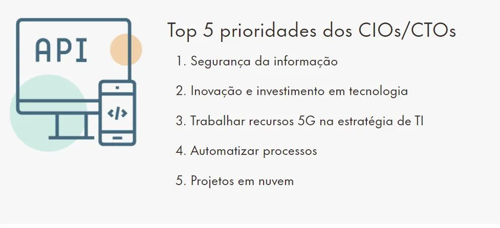

Profissão do futuro? Salários para segurança digital chegam a R$ 47mil
Em meio à escalada no número de ataques hackers no mundo, estudo mostra que a proteção de informações está entre as principais prioridades estratégicas dos CIOs para 2022
Cada vez mais frequentes, os ciberataques vêm preocupando empresas – e governos – de todo o mundo. Microsoft, Samsung, Americanas, Sebrae e Mercado Livre são apenas alguns exemplos de grandes organizações que tiveram seus sistemas invadidos por criminosos desde o começo do ano. Na semana passada, foi a vez do site do Tribunal Regional Federal da 3ª região (TRF-3), que abrange São Paulo e Mato Grosso do Sul, ser invadido por hackers. Uma semana após o ataque, os serviços ainda não foram reestabelecidos.
 

Mas a escalada sistemática deste tipo de ataque não é de hoje. Segundo um levantamento da consultoria alemã Roland Berger, Brasil foi o quinto país mais afetado por crimes cibernéticos no mundo em 2021. Apenas no primeiro semestre do ano passado, o país registrou 9,1 milhões de ocorrências de ataques do tipo “ransomware” (quando os cibercriminosos restringem o acesso ao sistema e cobram resgate em criptomoedas para que seja restabelecido).
Outro estudo, realizado pelo grupo Mz com base em dados coletados pelo sistema de busca do site da Comissão de Valores Mobiliários (CVM), indica que o aumento do número de ataques cibernéticos contra empresas brasileiras no primeiro semestre de 2021 um salto de 220% ante o mesmo período do ano anterior.
Mas, afinal, o que explica a escala de ataques virtuais no mundo?
Um dos fatores que ajudam a explicar o aumento destes ataques virtuais é a pandemia — que levou milhares de trabalhadores a trabalhar de casa, onde os servidores não costumam possuir todas as configurações de segurança necessárias para impedir crimes virtuais. Mas esta é apenas a ponta do iceberg.
A verdade é que, mesmo dentro do ambiente controlado do escritório, a maioria das empresas não está preparada para combater ataques cibernéticos. Pelo menos foi isso que mostrou um levantamento realizado pela consultoria americana Accenture.
Segundo o estudo, que ouviu mais de 4,7 mil executivos, em 23 setores e 18 países (incluindo o Brasil), 55% das empresas globais não conseguem combater e reduzir os impactos de violações virtuais de forma efetiva.
Nesse cenário, não é de se estranhar que a demanda por profissionais capacitados em direito digital e cibersegurança — e que possam, portanto, minimizar as chances de ataques aos seus sistemas corporativos — também esteja crescendo de maneira acelerada em todo o mundo.
Segurança digital no mercado de trabalho
Para ter ideia, a segurança dos sistemas de TI e proteção das informações das empresas apareceram entre as principais prioridades estratégicas dos CIOs para 2022 no último Guia Salarial da Robert Half, empresa global de consultoria de recursos humanos. Veja abaixo.
O documento também mostra que, com a crescente demanda por esse tipo de profissional dentro das empresas, a remuneração oferecida para estas vagas também é bastante competitiva: com os salários começando em na casa dos R$ 5 mil para cargos de entrada e podendo ultrapassar os R$ 45 mil mensais no caso de profissionais mais experientes.